♻️ Introducción
El presente proyecto final consiste en el diseño y fabricación de un basurero clasificador inteligente, desarrollado con el objetivo de facilitar la separación de residuos de manera automática. La propuesta busca aportar a una mejor gestión de la basura, reduciendo los errores que pueden producirse al momento de clasificar los desechos y promoviendo prácticas más responsables con el ambiente.
Para su desarrollo se integraron herramientas de análisis de requerimientos, diseño asistido por computadora, electrónica, programación y fabricación digital. El sistema funciona mediante un mecanismo accionado por un servomotor, el cual permite mover la parte central del basurero para dirigir cada residuo hacia el contenedor correspondiente.
📋 Análisis QFD
Tabla QFD
La primera etapa del proyecto consistió en realizar una tabla QFD, también conocida como Casa de la Calidad. Esta herramienta permitió analizar las necesidades de los posibles usuarios y relacionarlas con las características técnicas que debía tener el producto. De esta manera, fue posible identificar cuáles eran los aspectos más importantes que debían considerarse durante el diseño del basurero clasificador.
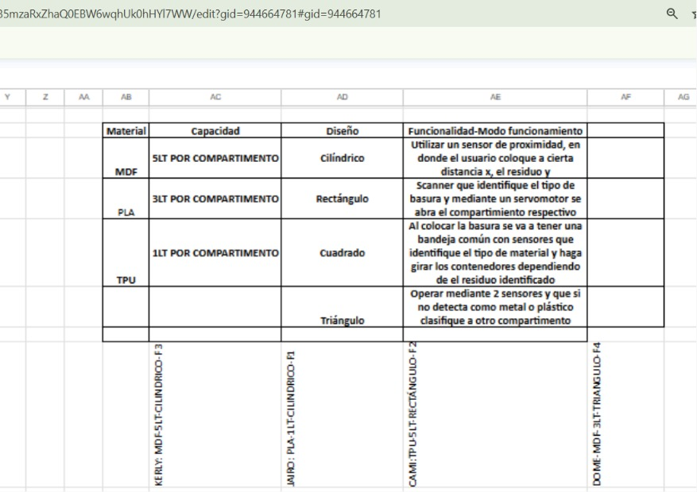


💡 Ideación y Bocetos
Generación de Ideas
Después del análisis QFD, el grupo realizó una lluvia de ideas para definir cómo sería posible construir el basurero clasificador inteligente. En esta etapa se analizaron diferentes alternativas de diseño, considerando aspectos como el tamaño del prototipo, la ubicación de los contenedores, el movimiento de la parte central, la facilidad de uso y la integración de los componentes electrónicos.
Esta fase permitió transformar una idea inicial en una propuesta más clara, organizada y funcional. Se buscó que el basurero no solo cumpliera con la clasificación de residuos, sino que también tuviera una estructura práctica, estable y fácil de comprender para el usuario.


Boceto Seleccionado
Luego de comparar las diferentes propuestas planteadas por el equipo, se escogió el boceto que mejor se adaptaba al funcionamiento esperado del sistema. El diseño seleccionado permite ubicar los contenedores alrededor de un mecanismo central móvil, facilitando que la basura sea dirigida hacia el recipiente correspondiente de forma ordenada.
La selección del boceto también tomó en cuenta la facilidad de fabricación, el espacio disponible para los componentes electrónicos, la estabilidad de la estructura y la posibilidad de realizar ajustes durante la etapa de ensamblado.

👥 Organización del Equipo
Distribución de Actividades
Para desarrollar el proyecto de manera más eficiente, el grupo se dividió en dos subgrupos de trabajo. Kerly Morales y Camila Barros se encargaron del diseño del basurero, el modelado de los contenedores y la fabricación de las piezas mediante impresión 3D.
Por otro lado, Jairo Andrade y Domenica Peña se enfocaron en la parte electrónica, el funcionamiento del sistema, el control del servomotor, el diseño de la placa en KiCad y la elaboración de las pistas de cobre. Esta distribución permitió que cada integrante se concentrara en una parte específica del proyecto, manteniendo una coordinación constante para integrar posteriormente todos los elementos en un solo prototipo.
La organización del equipo fue fundamental para distribuir responsabilidades, aprovechar las habilidades de cada integrante y cumplir con las diferentes etapas del proyecto dentro del tiempo disponible.
🧩 Diseño e Impresión 3D
Diseño de Contenedores
El diseño del basurero se desarrolló considerando la ubicación de los contenedores, el espacio necesario para la parte móvil central y la integración de los componentes electrónicos. Durante esta etapa se definieron las formas, dimensiones y uniones principales que tendría la estructura del prototipo.
El modelado tridimensional permitió visualizar el resultado antes de la fabricación, detectar posibles problemas de ensamblaje y realizar correcciones en las piezas. Gracias a este proceso se logró obtener un diseño más preciso y adaptado al mecanismo de clasificación propuesto.
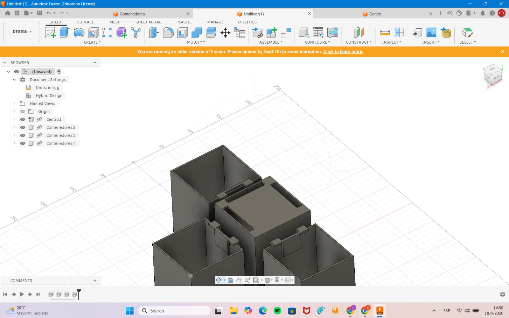


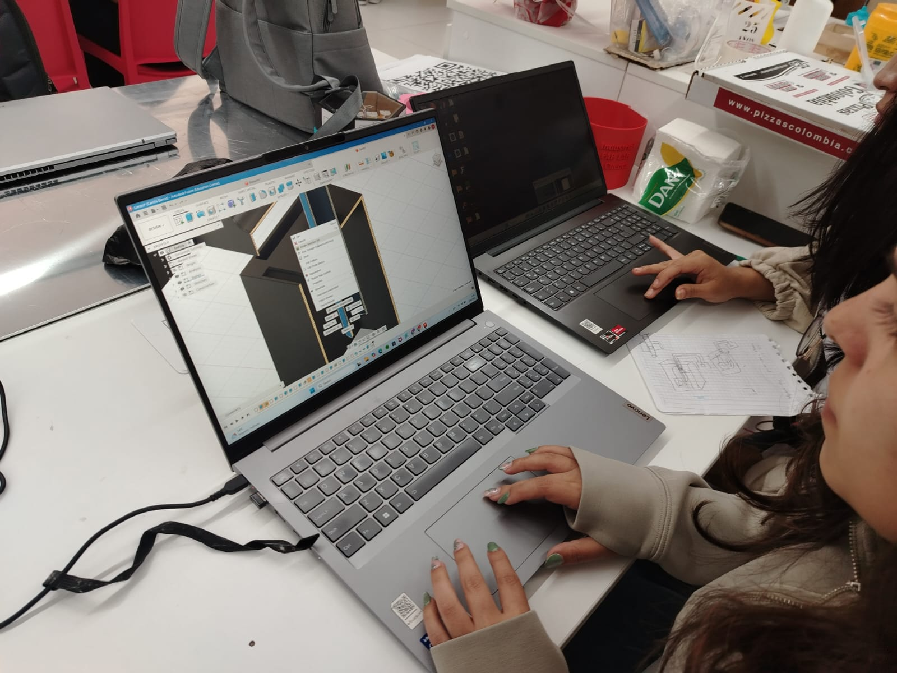
Impresión 3D
Una vez definidos y revisados los diseños, se procedió a imprimir los contenedores y las piezas principales del prototipo. La impresión 3D permitió fabricar componentes personalizados, ajustados a las medidas establecidas y compatibles con el funcionamiento del sistema.
Durante el proceso se supervisaron aspectos como la correcta adhesión de las primeras capas, el tiempo de fabricación, el acabado de las piezas y la precisión dimensional. Después de la impresión, cada componente fue revisado para comprobar que pudiera integrarse correctamente con el resto de la estructura.
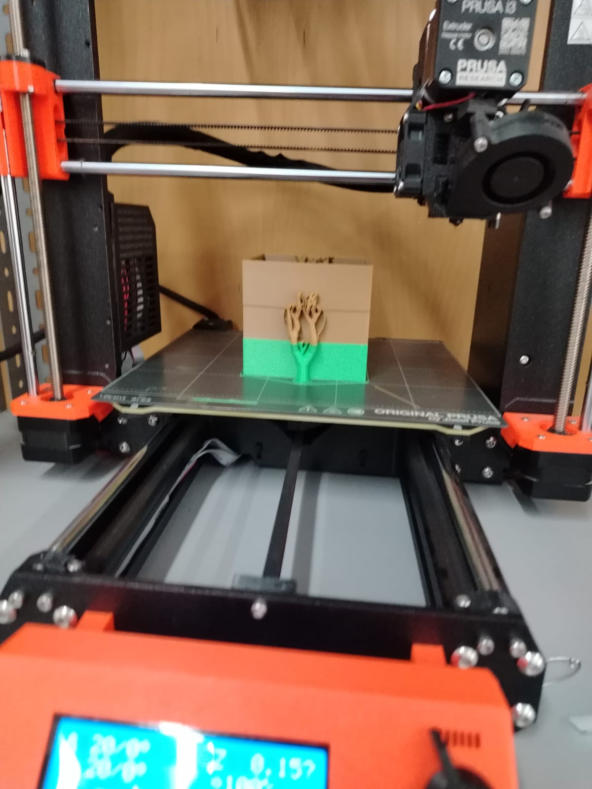

🔌 Diseño de Placa en KiCad
Esquemático y PCB
También se realizaron los esquemas de la placa electrónica en KiCad. Esta etapa permitió organizar las conexiones del circuito, identificar los pines de cada componente y establecer la relación entre los sensores, el sistema de control y el servomotor.
Después de completar el esquemático, se diseñó la distribución de los componentes y de las pistas en la placa PCB. Para ello se consideró el espacio disponible, la facilidad de conexión y la separación adecuada entre las pistas, con el propósito de obtener una placa ordenada y funcional.
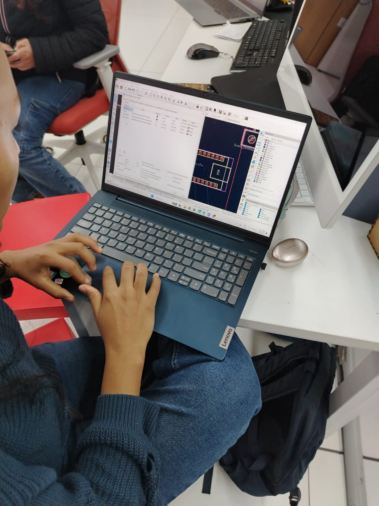
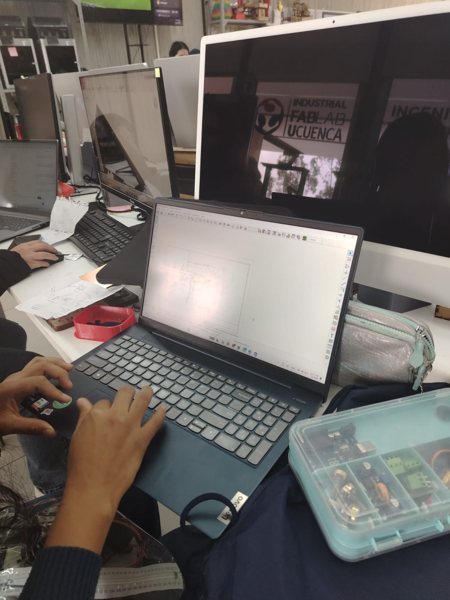
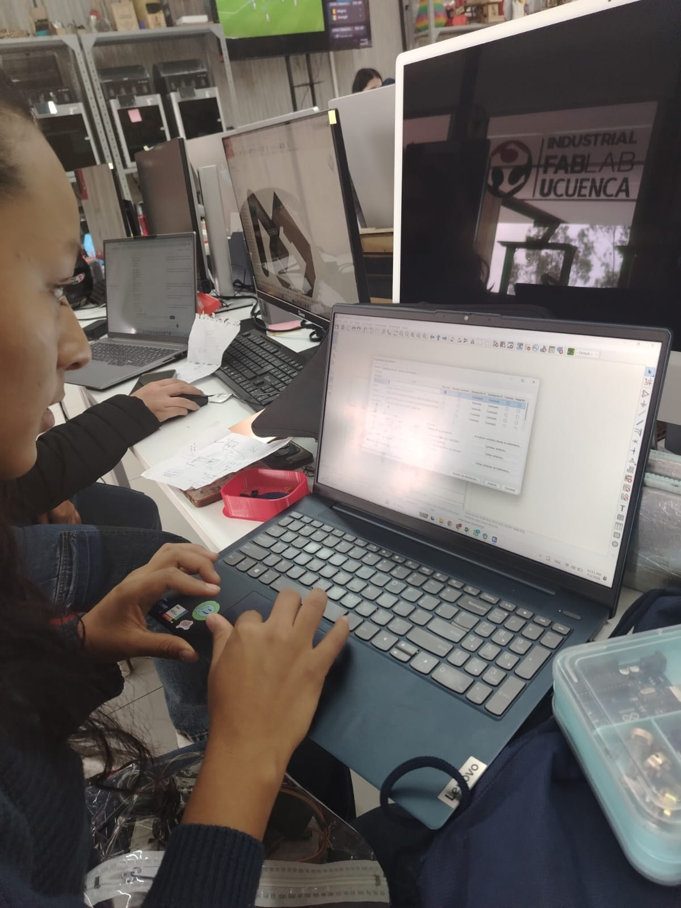
Fabricación de Pistas
Luego del diseño de la placa, se procedió a realizar las pistas de cobre mediante una máquina de desbaste con láser. Este procedimiento permitió retirar el material alrededor de las pistas y conservar los caminos conductores necesarios para conectar los componentes electrónicos.
Durante la fabricación se revisó la continuidad de las pistas, la separación entre las conexiones y el estado general de la placa. Estas verificaciones fueron importantes para reducir la posibilidad de cortocircuitos o conexiones defectuosas durante el ensamblaje del sistema.
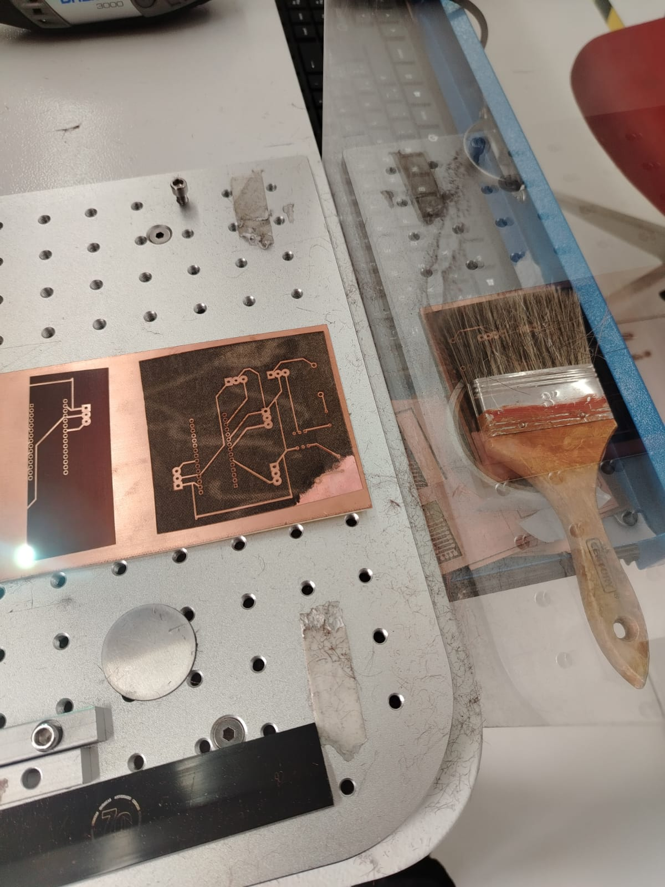

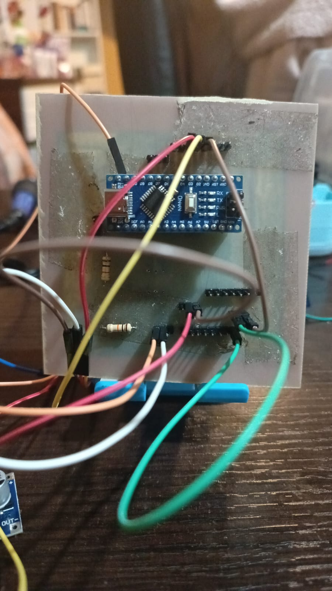
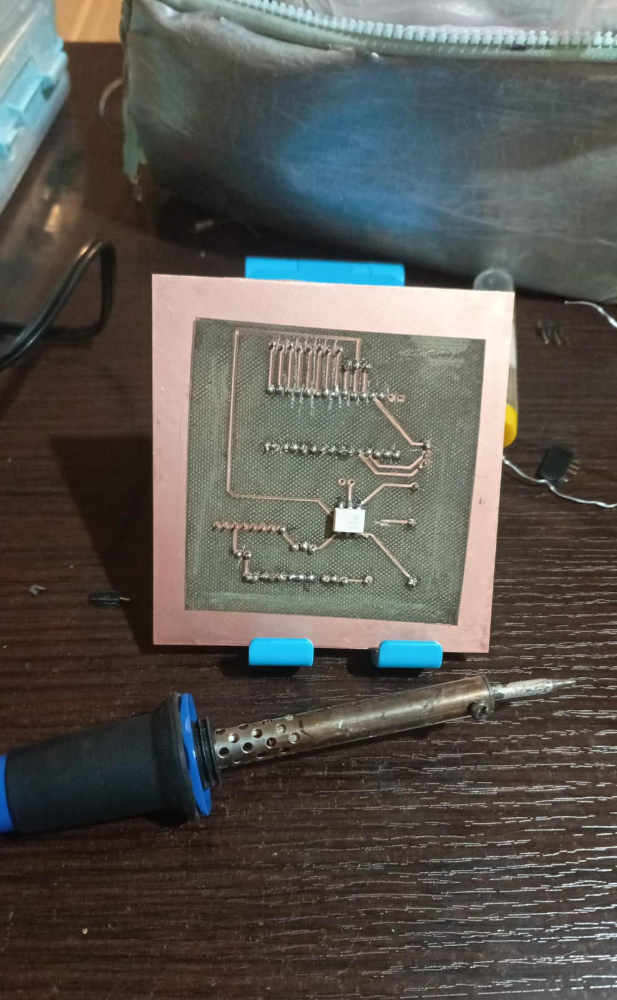
🔧 Ensamblado del Prototipo
Integración de la Estructura y los Componentes
Una vez terminadas las piezas impresas en 3D y preparada la placa electrónica, se procedió al ensamblado general del basurero clasificador. En esta etapa se colocaron los contenedores en su posición definitiva, se instaló el mecanismo central y se verificó que cada elemento quedara correctamente alineado.
El servomotor fue fijado en la zona central del prototipo para controlar el movimiento del canal encargado de dirigir los residuos. También se conectaron la placa electrónica, los sensores y los demás componentes necesarios para el funcionamiento del sistema.
Los cables fueron organizados cuidadosamente para evitar que interfirieran con el movimiento del mecanismo o con la caída de los residuos. Además, se realizaron ajustes en las uniones, soportes y puntos de fijación para mejorar la estabilidad de la estructura.
Esta etapa permitió unir la parte mecánica, las piezas impresas y el sistema electrónico en un solo prototipo. Después del ensamblado se verificó que el canal central pudiera girar libremente y que los componentes permanecieran firmes durante las pruebas.
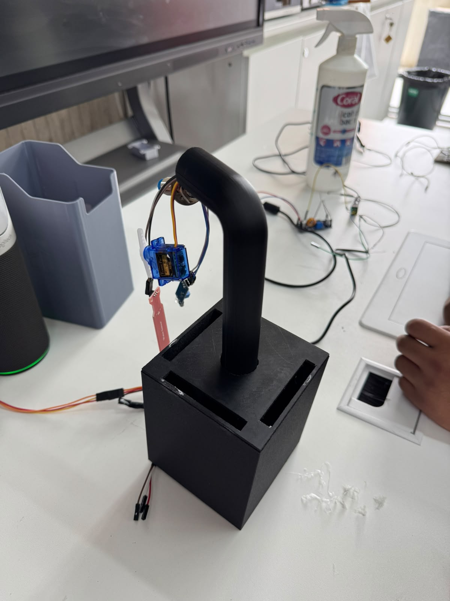
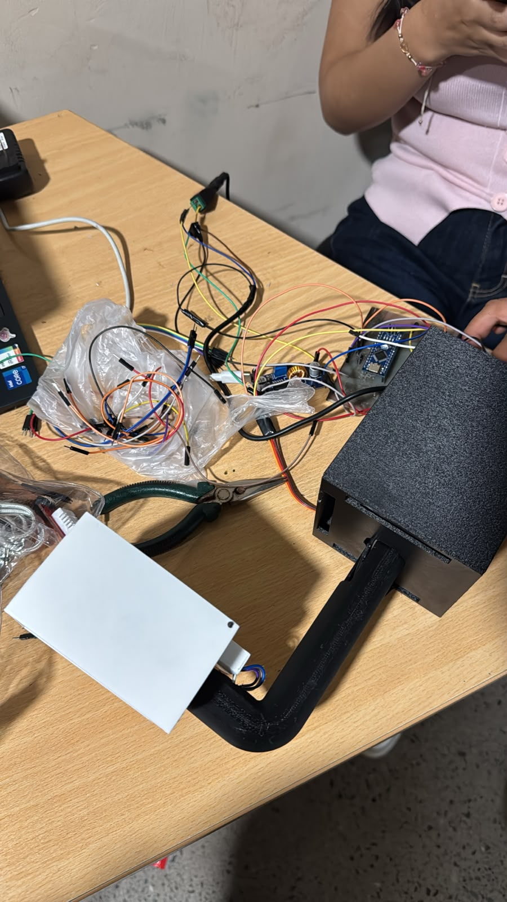
Proceso de ensamblado
Integración final del prototipo
⚙️ Funcionamiento del Proyecto
Clasificación Automática de Residuos
El funcionamiento del proyecto se basa en la combinación del sistema de detección, el control electrónico y el mecanismo de distribución. Cuando se introduce un residuo, el sistema identifica la categoría correspondiente y envía una señal al servomotor para que se mueva hasta el ángulo programado.
El servomotor gira la parte central del basurero y la alinea con el contenedor adecuado. Una vez alcanzada la posición establecida, el residuo desciende por el canal y cae en el recipiente destinado para ese tipo de desecho.
Después de completar la clasificación, el mecanismo regresa a su posición inicial y queda preparado para recibir un nuevo residuo. Los ángulos de giro fueron calibrados mediante varias pruebas para asegurar que el canal coincida correctamente con cada contenedor.
Durante las pruebas también se verificó la respuesta del servomotor, la velocidad de movimiento y la estabilidad del canal central. Estos ajustes ayudaron a evitar que los residuos cayeran fuera de los recipientes o que el mecanismo se detuviera en una posición incorrecta.
La integración entre el diseño mecánico, la placa electrónica y el código de programación permite que el prototipo realice la clasificación de forma ordenada y automática. De esta manera, el proyecto demuestra una aplicación práctica de la automatización en el manejo y separación de residuos.
Demostración del funcionamiento
🎥 Video del Proceso
Explicación del Proyecto
En esta sección se presenta un video donde se explica el proceso completo del proyecto, desde la etapa de análisis QFD, la generación de ideas y los bocetos, hasta el diseño, la impresión 3D, el desarrollo electrónico, la fabricación de la placa, el ensamblado y las pruebas de funcionamiento del basurero clasificador.
📂 Descargables
QFD
Documento de Excel que contiene el análisis QFD utilizado para identificar y relacionar las necesidades de los usuarios con las características técnicas del basurero clasificador.
Descargar QFDArchivos de Diseño 3D
Modelos tridimensionales utilizados para fabricar los contenedores y los diferentes componentes que forman parte de la estructura del prototipo.
Descargar ModelosArchivos KiCad
Archivos correspondientes al esquemático electrónico, la distribución de componentes y el diseño de las pistas de la placa PCB.
Descargar KiCadCódigo del Sistema
Código utilizado para controlar el servomotor, procesar la información del sistema de detección y ejecutar la clasificación automática de los residuos.
Descargar CódigoEl proyecto permitió integrar diseño, fabricación digital y electrónica en el desarrollo de un basurero clasificador inteligente. A través del análisis QFD se definieron las principales características del producto, mientras que los bocetos y modelos tridimensionales permitieron seleccionar y mejorar una propuesta funcional.
Posteriormente, se diseñó la placa electrónica en KiCad y se fabricaron las pistas de cobre necesarias para conectar los componentes. Una vez finalizada esta etapa, se realizó el ensamblado de los contenedores, el mecanismo central, el servomotor y la placa electrónica.
Finalmente, las pruebas de funcionamiento y la calibración de los ángulos permitieron comprobar que el mecanismo puede orientar los residuos hacia el contenedor correspondiente. El resultado demuestra cómo el diseño, la automatización y la conciencia ambiental pueden combinarse para generar una alternativa práctica para la clasificación de desechos.